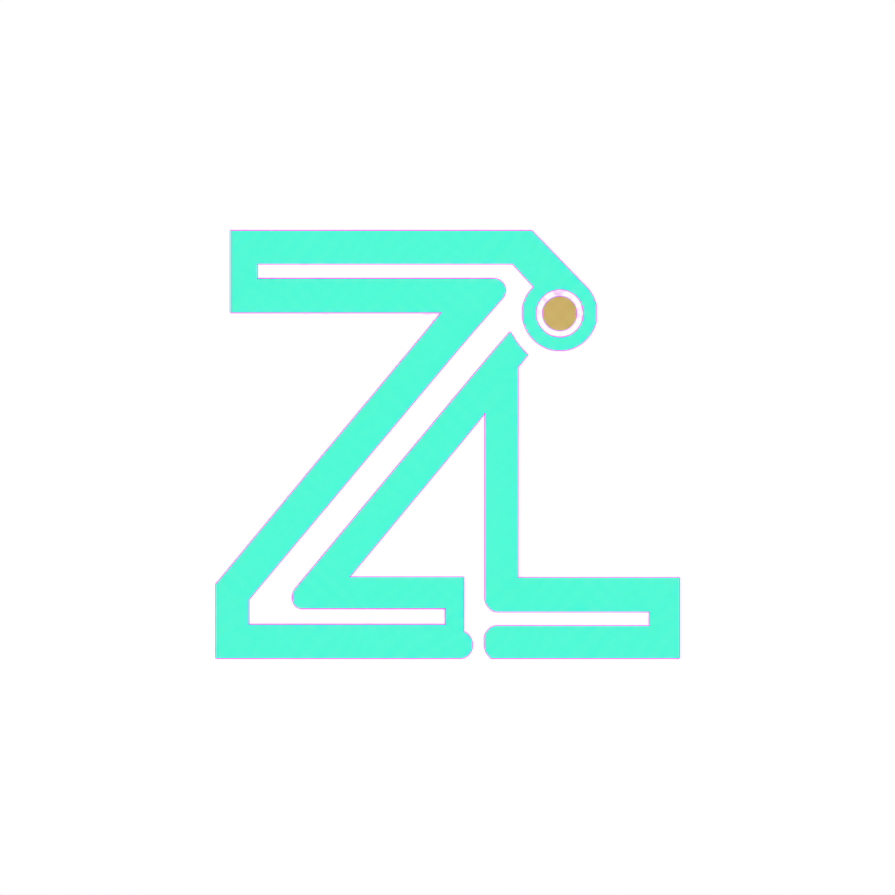
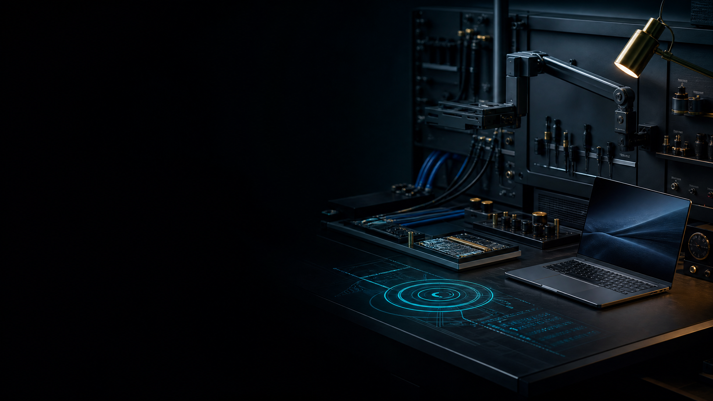
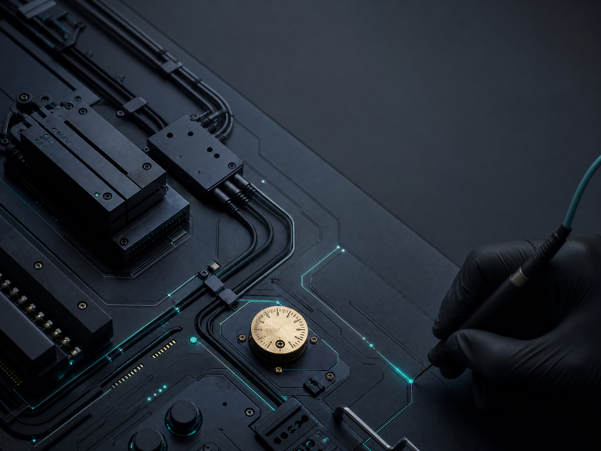
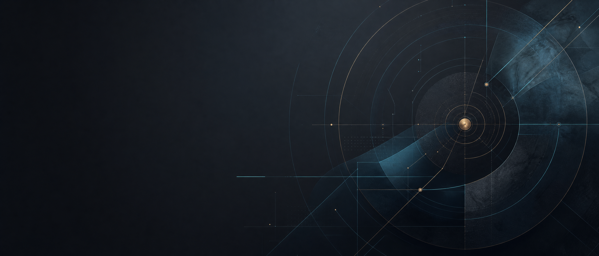

Software repair
Focused troubleshooting for applications, operating systems, slowdowns, error states, and setup friction.
Discuss this service ↗
ZASHEIRA LI / TECH SYSTEMS Start a request ↗
Zasheira Li helps individuals and small teams repair, secure, and tune the technology they rely on every day.
Good technical support is not just about fixing what broke. It is about giving you a reliable path forward.
↘Choose the system area that needs attention. Each engagement begins with the outcome you are trying to protect.
Focused troubleshooting for applications, operating systems, slowdowns, error states, and setup friction.
Discuss this service ↗
Try the console. It is a small preview of the approach: examine the moving parts, make the state visible, then choose the most useful next step.
OPERATING LAYERREADY
NETWORK PATHMONITORED
WORKSPACE MODEACTIVE
✦ Calm, practical, no unnecessary noise.
Share the symptoms, your tools, and the result you need.
Get a clear scope and the next best technical step.
Move forward with a more dependable, understandable system.

Describe the issue in plain language. A good request starts with the work you want your technology to support.
FORM STATUS: INQUIRY INTAKE